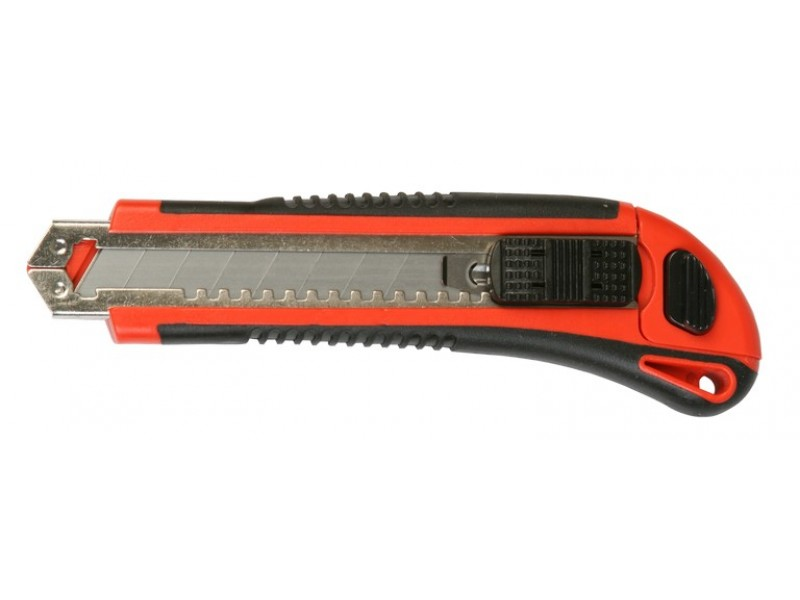

 คัดเตอร์ คือ มีดอเนกประสงค์ที่ใช้สำหรับกรีดและตัดวัสดุสิ่งของต่างๆ ในชีวิตประจำวันได้อย่างหลากหลาย
ไม่ว่าจะใช้กรีดเปิดกล่องพัสดุ ตัดพลาสติก กระดาษ เชือก กระจก วัตถุดิบอาหารและอื่นๆ อีกมากมาย ซึ่งนับได้ว่าเป็นอุปกรณ์ที่จัดอยู่ในหมวดเครื่องเขียน เครื่องใช้ในสำนักงาน และรวมถึงเป็นอุปกรณ์ช่วยตัดในงานช่างอีกด้วย
โดยคัตเตอร์มีส่วนประกอบหลักๆ อยู่ 3 ส่วน คือ ใบมีด ด้ามจับ และตัวเลื่อนใบมีดเข้า/ออก โดยส่วนของใบมีดคัตเตอร์ผลิตได้จากวัสดุหลายประเภท เช่น เหล็กกล้าคาร์บอน สแตนเลส เซรามิก เป็นต้น
ซึ่งแต่ละวัสดุมีความแข็งแรงทนทานและใช้ตัดวัสดุได้ดีต่างกัน นอกจากนี้ใบมีดคัตเตอร์บางรุ่นมีการเคลือบผิวด้วยไทเทเทียมเพื่อเพิ่มความแข็งแรงและคงทน ทำให้ใบมีดคมยาวนานมากขึ้น ส่วนด้ามจับมีให้เลือกใช้งานทั้งด้ามโลหะ
ด้ามพลาสติกและด้ามแบบหุ้มยาง ส่วนตัวเลื่อนใบมีดก็เป็นอีกชิ้นส่วนสำคัญมีหน้าที่ล็อกและเลื่อนปรับระดับความยาวใบมีด ทั้งยังเป็นชิ้นส่วนที่สามารถถอดประกอบเพื่อเปลี่ยนหรือทำความสะอาดใบมีดอีกด้วย
คัตเตอร์มีให้เลือกใช้หลายแบบและหลายขนาด ดังนั้นจึงจำเป็นต้องเลือกคัตเตอร์ให้เหมาะกับงาน เพื่อใช้ตัดวัสดุได้อย่างแม่นยำและปลอดภัยต่อผู้ใช้งานอีกด้วย
วิธีการใช้คัตเตอร์ให้ปลอดภัย
วิธีหักใบมีดคัตเตอร์ที่ถูกวิธี
การดูแลเก็บรักษามีดคัตเตอร์ไม่ให้เกิดสนิม
วิธีการใช้คัตเตอร์ให้ปลอดภัย
-เราต้องเลือกตัวคัตเตอร์ให้เหมาะกับการใช้งาน ข้อนี้เป็นเป็นเซนต์ของทุกคนที่ต้องรู้ว่างานแบบนี้ต้อใช้คัตเตอร์แบบไหน
-ใช้แผ่นรองตัดทุกครั้งในการตัดวัสดุต่างๆ ด้วยคัตเตอร์ เนื่องจากแผ่นรองตัดจะช่วยยึดเกาะวัสดุที่ต้องการตัดให้อยู่กับที่ และเป็นการป้องกันพื้นผิวโต๊ะได้อีกด้วย แถมในแผ่นรองตัดโดยทั่วไปจะมีสเกล ทำให้เราตัดงานได้ตรงและง่ายมากขึ้น
-มีดคัตเตอร์อาจจะมีบางรุ่นที่มีตัวล็อคใบมีด ให้เลื่อนใบมีดออกมาพอดีกับความจำเป็นที่ต้องใช้ แล้วทำการล็อคใบมีด เพื่อป้องกันอุบัติเหตุ
-สติ สาธิ เป็นสิ่งสำคัญในการทำงาน ไม่ว่าจะเป็นงานด้านไหนก็ตาม เช่นการใช้คัตเตอร์นี้ จำเป็นอย่างยิ่งที่ต้องมีสติในการใช้งานอยู่ตลอดเวลา
-หากชิ้นงานที่ต้องการตัดไม่ได้เป็นเส้นตรง หรือตัดแบบฟรีแฮนด์ ขณะที่ใช้มีดคัตเตอร์ตัดชิ้นงาน ให้ระวังนิ้วมือ ไม่วางมือไว้ใต้ทางที่ต้องการตัด
-ใช้มีดคัตเตอร์สำหรับงานตัดเท่านั้น หลายๆ คนใช้คัตเตอร์ประหนึ่งเป็นอุปกรณ์ครอบจักรวาล ทำให้เกิดอุบัติเหตุได้บ่อยครั้ง
-แนะนำให้ใช้ใบมีดคัตเตอร์ที่มีความคมในการตัดชิ้นงาน หากปลายใบมีดไม่คม ให้หักออกตามรอยบากบนใบมีด ทำให้ตัดงานได้เรียบเนียน และการใช้ใบมีดที่มีความคม ปลอดภัยกว่าใช้ใบมีดแบบไม่คม
-เมื่อใช้งานคัดเตอร์เสร็จแล้ว ให้เลื่ยนใบมีดเก็บทุกครั้ง เพื่อป้องกันอุบัติเหตุที่อาจจะเกิดขึ้นได้
Back to top
วิธีหักใบมีดคัตเตอร์ที่ถูกวิธี
-บริษัทผลิตคัตเตอร์ส่วนใหญ่จะผลิตอุปกรณ์ในการหักใบมีดไว้อยู่แล้ว คือตัวหนีบตรงปลายอีกด้านของมีดคัตเตอร์ จะมีร่องบาก ดึงออกมา
-เสียบที่ปลายใบมีด ให้เลื่อนใบมีดออกมาเท่าที่ต้องการหักออกเท่านั้น
-ก่อนหักให้ใช้อุปกรณ์ป้องกัน คือสวมถุงมือ ใส่แว่นป้องกันดวงตา และหักใบมีดในที่โล่ง ไม่อยู่ท่ามกลางผู้คน
-ใบมีดที่หักออกมาแล้ว ให้หากล่องหรือขวดมาใส่แยกไว้ ห้ามนำไปรวมกับขยะประเภทอื่นๆ เพราะจะก่อให้เกิดอันตรายได้
Back to top
การดูแลเก็บรักษามีดคัตเตอร์ไม่ให้เกิดสนิม
ปัญหาอีกอย่างสำหรับผู้ใช้มีดคัตเตอร์ คือ สนิมที่เกาะตามใบมีด เพราะเราอาจจะไม่ได้ใช้งานใบมีดบ่อยๆ เก็บไว้นานๆ ไปก็มีสนิมมาเกาะ ถ้าเปื้อนโดนชิ้นงานที่ต้องการตัด ก็จะทำให้ชิ้นงานสกปรก
ดังนั้นเราต้องเข้าใจก่อนว่าสนิมเกิดจากอะไร สนิทเกิดจากโลหะ หรือในที่นี้คือใบมีด สัมผัสกับออกซิเจนที่อยู่ในอากาศ น้ำ และปัจจัยเรื่องความร้อน ก่อให้เกิดกระบวนการออกออกซิเดชั่น และเกิดเป็นสนิทขึ้นมา
ดังนั้นการเก็บรักษาใบมีดไม่ให้เป็นสนิม ง่ายๆ คือการเก็บไว้ไม่ให้สัมผัสอากาศ หรือความชื้น โดยการเก็บไว้ในถุงสุญญากาศ หรือหากวิธีแรกยุ่งยากไป ให้ใช้วิธีการทาน้ำมันชโลมใบมีดเอาไว้ น้ำมันจำทำหน้าที่เป็นกำแพงกั้นระหว่างใบมีดกับอากาศนั่นเอง
Back to top
แหล่งที่มา : https://www.ofm.co.th/blog/%E0%B9%83%E0%B8%8A%E0%B9%89%E0%B8%84%E0%B8%B1%E0%B8%95%E0%B9%80%E0%B8%95%E0%B8%AD%E0%B8%A3%E0%B9%8C-%E0%B8%9B%E0%B8%A5%E0%B8%AD%E0%B8%94%E0%B8%A0%E0%B8%B1%E0%B8%A2/
แหล่งที่มา : https://www.safetycut.net/%E0%B8%AA%E0%B8%B2%E0%B8%A3%E0%B8%B0%E0%B8%99%E0%B9%88%E0%B8%B2%E0%B8%A3%E0%B8%B9%E0%B9%89%E0%B9%80%E0%B8%81%E0%B8%B5%E0%B9%88%E0%B8%A2%E0%B8%A7%E0%B8%
81%E0%B8%B1%E0%B8%9A%E0%B8%84%E0%B8%B1%E0%B8%95%E0%B9%80%E0%B8%95%E0%B8%AD%E0%B8%A3%E0%B9%8C
แหล่งที่มา : https://www.hardwarehouse.co.th/blog/blog49/